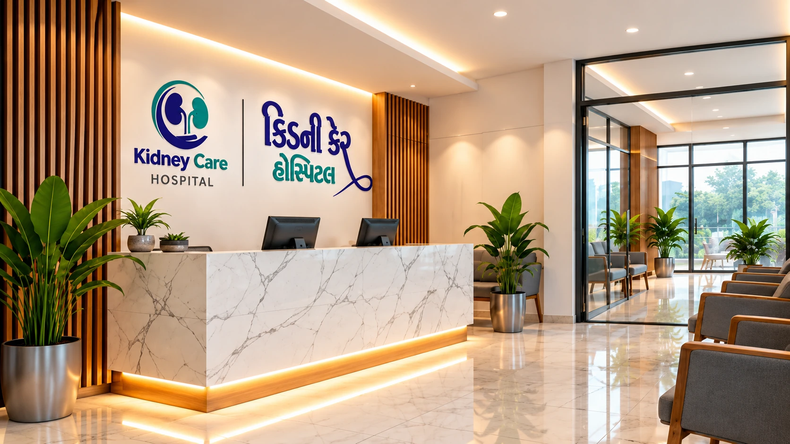

Listen Carefully
Understand the patient's concerns and symptoms.
At Kidney Care Hospital, Mehsana, we focus on providing advanced, compassionate and patient-centred urology care for all kidney-related conditions.

Kidney Care Hospital was established with a simple yet strong vision — to make high-quality urology care accessible to people in Mehsana and surrounding areas. We combine modern technology, clinical expertise and a compassionate approach to help our patients live healthier, more comfortable lives.
M.S., M.Ch. (Urology)
Urologist, Andrologist & Kidney Transplant Surgeon
Dr. Ketul S. Patel is a dedicated Urologist, Andrologist and Kidney Transplant Surgeon with expertise in advanced urological care. He focuses on providing accurate diagnosis, effective treatment planning and compassionate care for all kidney and urology-related problems.
Every patient’s concerns and medical needs are different. We believe clear communication is an important part of care — understanding the symptoms, explaining the available options and helping patients take confident next steps.
Understand the patient's concerns and symptoms.
Help patients understand their condition and available treatment options.
Agree on appropriate next steps based on individual care needs.
We provide a clean, well-organised and welcoming environment that supports patients to receive safe and comfortable specialist care for every patient.
Get expert guidance and personalised treatment for your kidney and urology concerns.